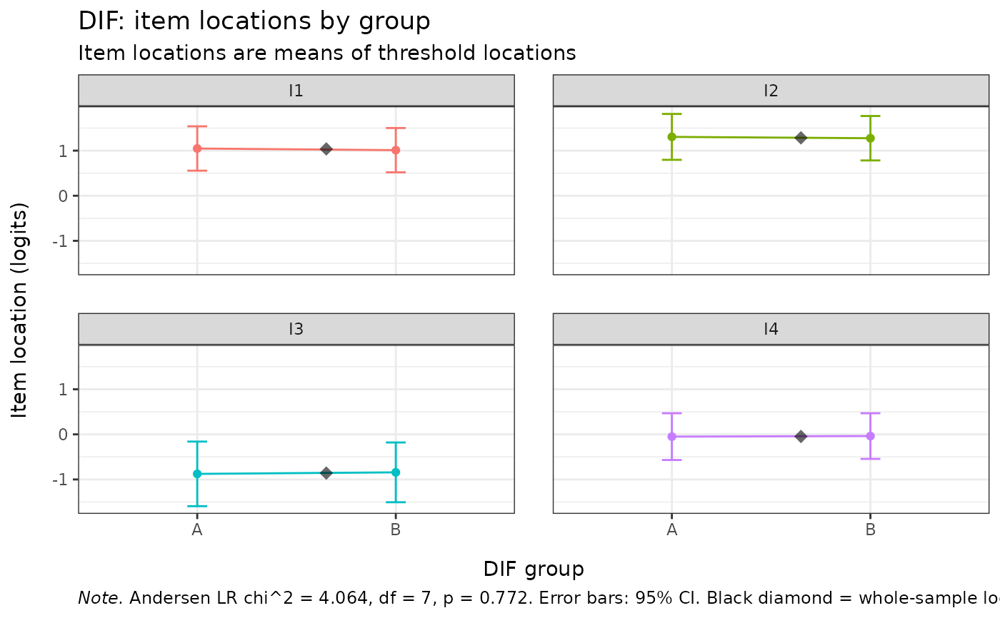

Splits a Rasch model by an external grouping variable using
eRm::LRtest() and reports per-group item locations (or per-group
threshold locations) together with their standard errors. A single
function replaces the four legacy helpers (RIdifTableLR,
RIdifThreshTblLR, RIdifFigureLR, RIdifThreshFigLR) by exposing the
two underlying axes – level (item or threshold) and output
(data.frame, kable, or ggplot) – as arguments. The same data
preparation pipeline feeds all six combinations.
Arguments
- data
A data.frame or matrix of item responses (non-negative integers, 0-based). One column per item, one row per person. Person IDs and grouping variables must not be included – pass the grouping variable separately via
dif_var.- dif_var
Vector of length
nrow(data)(factor, character, or numeric) defining the DIF grouping variable. Coerced to factor; unused levels are dropped. Rows wheredif_varisNAare dropped with a message. Must result in at least 2 groups after cleaning.- model
One of
"auto"(default),"PCM", or"RM"."auto"fitseRm::RM()when the data are dichotomous (max response = 1) andeRm::PCM()otherwise."RM"errors on polytomous data.- level
One of
"item"(default) or"threshold"."item"reports each item's mean threshold location per group;"threshold"reports each individual threshold per group. For dichotomous (RM) data the two views are equivalent (one threshold per item).- output
One of
"ggplot"(default),"kable", or"dataframe". The data.frame view always carries aFlaggedlogical column; the kable view bolds flagged rows; the ggplot view shows confidence intervals.- cutoff
Numeric or
NULL. Threshold (in logits) for theFlaggedcolumn: a row is flagged whenMaxDiff > cutoff, whereMaxDiffis the difference between the largest and smallest per-group location for that item (or threshold). Set toNULLto suppress flagging. Default0.5.- conf
Numeric in (0, 1). Confidence level used for the ggplot error bars. Default
0.95.- sort
Logical.
kableoutput only: sort rows byMaxDiff(descending). DefaultFALSE.
Value
A data.frame, a knitr_kable object, or a ggplot
object, depending on output.
The data.frame has one row per item (level = "item") or per
item x threshold (level = "threshold"), with columns
Item (and Threshold at threshold level), one numeric
column per group level, an All column for the unsplit fit,
MaxDiff, Flagged (when cutoff is non-NULL),
and matching SE_* columns.
The Andersen LR test result is attached as
attr(result, "lr_test") on the data.frame, in the kable
footnote, and in the ggplot caption (LR \(\chi^2\), df, p-value).
Details
The Partial Credit Model (PCM) is fitted by default for polytomous data
and the dichotomous Rasch Model (RM) is fitted when all responses are
0/1; this can be overridden via model.
For the data.frame and kable outputs, locations are reported on the
centred eRm parameterisation returned by eRm::thresholds().
Per-group fits come from eRm::LRtest(..., splitcr = dif_var);
the unsplit fit (All column) is the model fitted to the full
dataset. The Andersen LR statistic, df, and p-value reported as the
lr_test attribute / caption come directly from
LRtest()'s return value.
cell_spec()-style HTML cell colouring used in the legacy
easyRasch package has been dropped in favour of a logical
Flagged column (and bold rendering in the kable output), so the
kable renders correctly in HTML, LaTeX, and pipe/markdown.
Examples
# \donttest{
set.seed(1)
data("pcmdat2", package = "eRm")
grp <- factor(sample(c("A", "B"), nrow(pcmdat2), replace = TRUE))
# Default: ggplot panel of item locations with 95% CIs
RMdifLR(pcmdat2, dif_var = grp)

# Threshold-level kable, sorted by MaxDiff
RMdifLR(pcmdat2, dif_var = grp,
level = "threshold", output = "kable", sort = TRUE)
#>
#>
#> Table: Partial Credit Model split by DIF variable (2 groups). Andersen LR chi^2 = 4.064, df = 7, p = 0.772. n = 300 complete cases, 4 items. **Bold** = MaxDiff > 0.5 logits.
#>
#> |Item |Threshold | A| B| All| MaxDiff|Flagged | SE_A| SE_B| SE_All|
#> |:----|:---------|------:|------:|------:|-------:|:-------|-----:|-----:|------:|
#> |I1 |c1 | 0.130| -0.346| -0.104| 0.476|no | 0.214| 0.219| 0.152|
#> |I1 |c2 | 1.965| 2.367| 2.180| 0.402|no | 0.288| 0.282| 0.201|
#> |I4 |c1 | -1.096| -0.865| -0.983| 0.231|no | 0.294| 0.282| 0.203|
#> |I4 |c2 | 0.996| 0.789| 0.889| 0.206|no | 0.234| 0.235| 0.165|
#> |I3 |c1 | -2.409| -2.228| -2.315| 0.182|no | 0.506| 0.452| 0.336|
#> |I2 |c2 | 2.086| 1.922| 1.996| 0.164|no | 0.309| 0.291| 0.211|
#> |I3 |c2 | 0.657| 0.543| 0.597| 0.114|no | 0.225| 0.224| 0.158|
#> |I2 |c1 | 0.524| 0.629| 0.571| 0.104|no | 0.210| 0.211| 0.148|
# Tidy data.frame for downstream use
df <- RMdifLR(pcmdat2, dif_var = grp, output = "dataframe")
attr(df, "lr_test")
#> $LR
#> [1] 4.063775
#>
#> $df
#> [1] 7
#>
#> $p_value
#> [1] 0.7724031
#>
#> $n_groups
#> [1] 2
#>
#> $groups
#> [1] "A" "B"
#>
#> $model
#> [1] "PCM"
#>
#> $n_persons
#> [1] 300
#>
#> $n_items
#> [1] 4
#>
df[df$Flagged, ]
#> [1] Item A B All MaxDiff Flagged SE_A SE_B SE_All
#> <0 rows> (or 0-length row.names)
# }